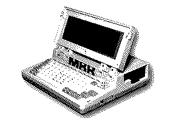
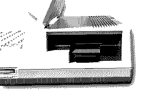
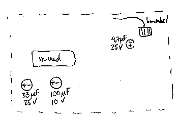
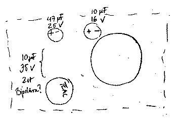

|
||||||||||||
|
|
||
/ Introduction /The floppy drive in my Bondwell Model 8 was sometimes working, sometimes not. Clear was however, that the track record wasn't getting better over time. So after a thorough clean and lubrication, I decided to recap the drive. The drive is a Teac branded 720 kb. Unfortunately I forgot to take a picture of the model name of the drive itself, and I am too lazy to open the whole case up again. So - add to to do list - check the model number next time I have the opportunity.   / Capacitor list /Note that the capacitors may not be taller than 6mm. One might get away to soldering them in a "lying down" position though. Top PCB
 FRONT ->
l--------------------------------------------------l
l l-----------l l
l l CONNECTOR l l
l __ l-----------l l
l /+-\ l
l \__/ l
l 4.7uF 25V l
l l----------l l
l l R/W HEAD l l FRONT ->
l l----------l l
l l
l __ __ l
l /+-\ /+-\ l
l \__/ \__/ l
l 33uF 25V 100uF 10V l
l l
l--------------------------------------------------l
Bottom PCB
 FRONT ->/ Conclusion /All in all the recapping was very uneventful, if a bit fiddly due to the small sizes of the capacitors. I also did not want to remove the bottom PCB from the drive assembly, as this would necessitate removing the flywheel. I can happily report that the floppy drive has worked reliably ever since! |
||
|
Tags: bondwell, teac, recapping, floppy / Published: 2026-03-09 |
| Skarven © 2026. Back to the top | ||